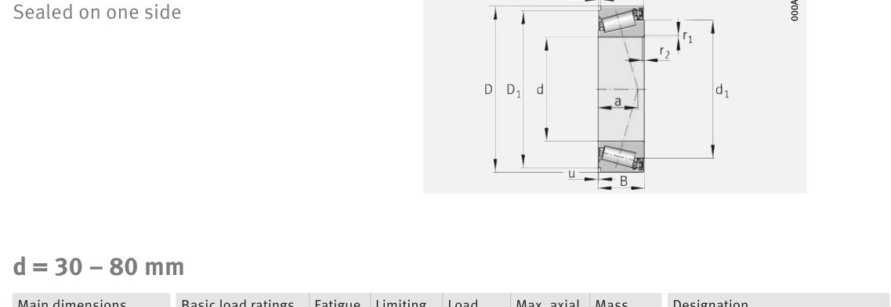

Original catalogue drawing - FAG Schaeffler HR 1, page 636

Scanned from the manufacturer catalogue page listing this part number. All part numbers printed on that table share the same drawing.
Scale cross-section
Blue = inner / outer ring, yellow = rolling element. Drawn to scale from this part's own
dimensions for selection reference only - not a manufacturing or assembly drawing.
Dimension table (mm / inch)
Symbol
Dimension
mm
inch
d
Bore diameter
30
1.1811
D
Outside diameter
55
2.1654
B
Inner-ring / bearing width
19
0.748
C
Cup / outer-ring width
18.5
0.7283
Notes
Weights are given in kg. Load ratings are shown in both the original catalogue units and the converted value (1 N = 0.2248 lbf). Data is provided for selection reference only - confirm against the latest official catalogue before ordering.
Main dimensions
Bore d (mm)
30
Outside dia. D (mm)
55
Width B (mm)
19
Cup width C (mm)
18.5
Inner-ring OD d1 (mm)
43.6
Inner-ring shoulder dia. D1 (mm)
51.4
Load ratings & speeds
Basic dynamic load rating Cr (lbs)
8655
Basic static load rating Cor (lbs)
10454
Basic dynamic load rating Cr (N)
38500
Basic static load rating C0r (N)
46500
Fatigue limit load Cur (N)
5300
Factor e
0.43
Factor Y
1.4
Factor Y0
0.77
Limiting speed nG (rpm)
6,100
Effective load centre a (mm)
15
Weight
Weight (kg)
0.19
Mounting dimensions (fillets / shoulders)
Chamfer r2 min (mm)
1
Shaft shoulder da (mm)
35
Shaft shoulder db (mm)
36
Housing fillet ra max (mm)
1
Bearing life (ISO 281 basic rating life)
C / P
Equivalent load P (N)
L10 (106 rev)
L10h at 2,000 rpm
4
9,625
102
847
6
6,417
392
3,271
8
4,812
1,024
8,533
10
3,850
2,154
17,954
15
2,567
8,323
69,362
Basic rating life per ISO 281: L10 = (C/P)10/3 with C = 38,500 N. Hours = L10 x 106 / (60n). Life-modification factors for lubrication, contamination and temperature (aISO) are not included.
Source & traceability
Brand
FAG
Source catalogue
FAG / Schaeffler Rolling Bearings HR 1
Catalogue page
p.636 (dimensions)
Load ratings in newtons, fatigue limit load Cur, limiting speed nG and reference speed nB.
Send us the quantity you need and we will come back with price and
lead time, normally within 24 hours. Equivalent parts from other brands can be quoted at the same time.